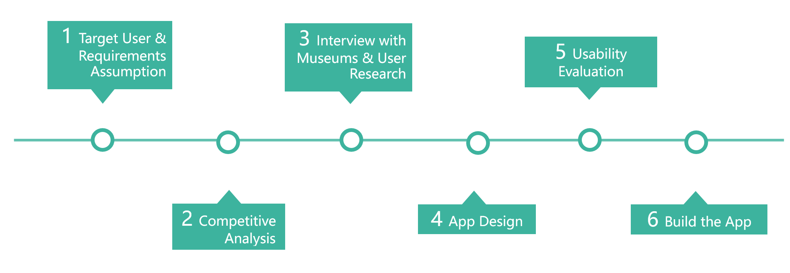
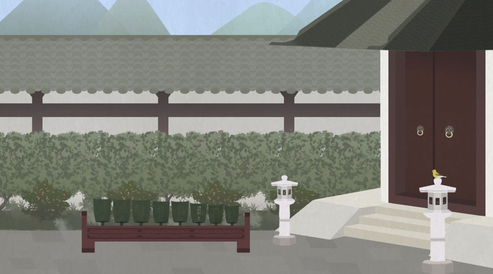
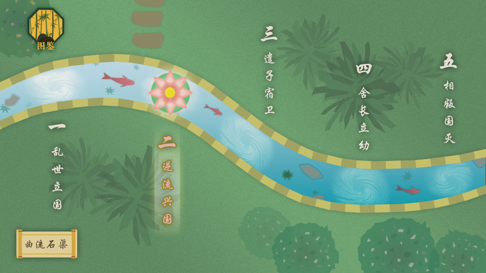
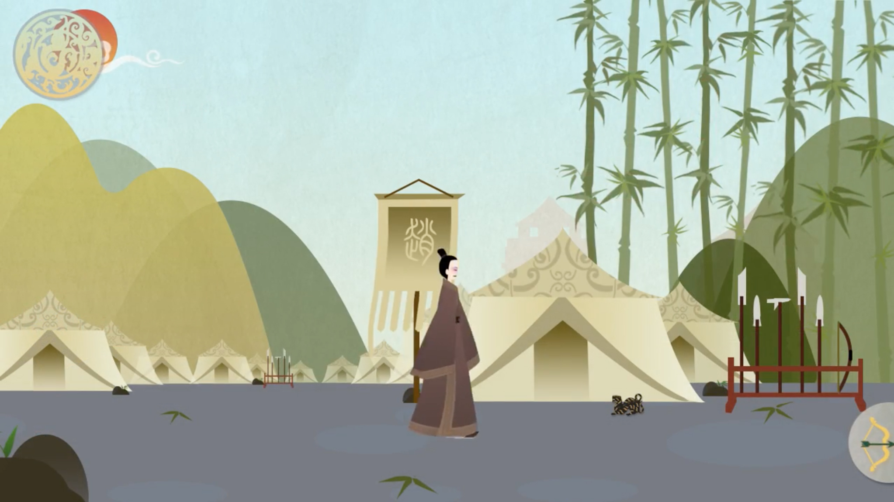
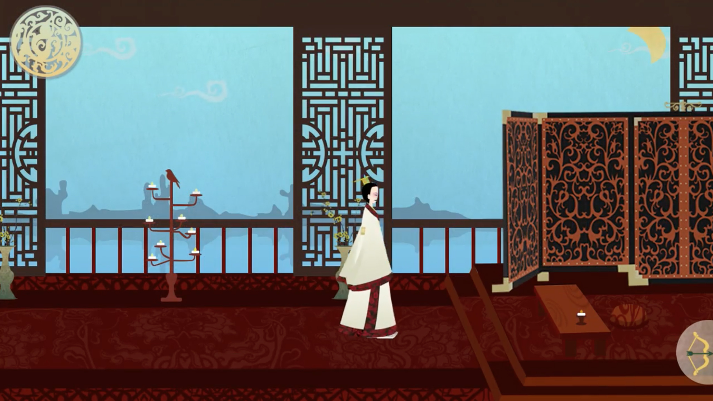

Project Type:
Team Project
(3 members)Project Roles:
UX Designer
2D ArtistProject Duration:
4 weeks
Tools:
Photoshop, AfterEffect
Experience Demo
This is a project cooperating with Museum of the Mausoleum of the Nanyue King and Museum of Nanyue Kingdom Palace. We aimed at helping museums to promote the history of Nanyue among young students and visitors with innovative methods. In this mobile app, you can experience a story about the 94 years of Nanyue Kingdom, being different characters in the history. Combining narrative and entertaining interaction makes the experience more immersive and attractive.
My role in this project was designing the UX flow for players exploring in the App, creating low-fidelity prototypes and characters.
Problems & Goals
Background
- High school students have little knowledge about Nanyue culture.
- Other museums have started using new media to promote.
Problems
- Promote the knowledge of Nanyue Kingdom among high school students.
- Help to promote museums of Nanyue culture online.
Goals
- Reduce the barriers to yound students understand culture of Nanyue
- Combine education of history with a game application.
Research & Interview
Target Users Research
Gamification is appealing to students.
We did interviews with students having different backgrounds and asked questions about the interest of Nanyue, the interest of games, the opinions about combining games and history and suggestion for Nanyue App. Finally we learned that game as a way for education was more attractive and students preferred enriched interactions inside the game.

Competitive Analysis
Fluent interaction,real time feedback and immersive environment are important.
We searched for similar applications with same key elements -- history and museums related. We compared all these applications by five categories: the expectation of usability, interests, innovation, arts style and narrative. According to the cometitive chart, we figured out the key points for App design.
Interview With Museums
Users can make choices based on historical facts in the experience.
In order to communicate about the research results and figure out the requirements and needs of our client, we did a insightful interview with the director of technology in the museum. In summary, our client expected the game could combine the historical facts strictly, players' decisions mattered in the game and the mechanism could be attractive.
Design Process
{kind=link}
Flow Design
- Digest Nanyue history for the script
- 5 chapters of the story → 5 parts of experiences
Based on 94 years history of Nanyue Kingdom, we divided the long story into 5 chapters according to the significant historical changes. In the story, the player is a scientist who can travel back to Western Han Dynasty and become historical characters to experience the history. Following the script, I designed the game into 5 parts. In every chapter, I designed the detailed flow of experience and drew out the flow maps.
{kind=link}
Low-fidelity Prototype
After the flow maps, I created low-fidelity prototypes for interfaces in the game. We used these prototypes to do user tests and later other artists followed them to make user interfaces.
{kind=link}
Arts Design
In arts part, I was mainly in charge of the character design. For designing different roles' appearance, I did research about the clothes of West Han Dynasty and Nanyue Kingdom to select patterns and colors. And I also designed some backgrounds inside the game.
{kind=link}
{kind=link}
Character design
{kind=link}
Garden scene design
{kind=link}
Homepage design
{kind=link}
Sceentshot of Nanyue
{kind=link}
Sceentshot of Nanyue